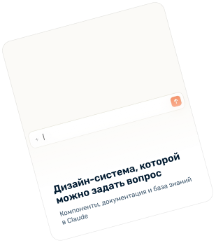

Изменение начала воронки увеличило
конверсию покупки в 2,5 раза
15,3% ➜ 38,4%
Конверсия покупки до и после редизайна. Данные с Looker studio
- Контекст
School fees insurance — страховка, которая оплачивает обучение ребёнка, если родитель потеряет работу или ребёнок не сможет учиться из-за болезни. Лендинг — первая точка входа в покупку полиса
- Проблема
Только 15,3% посетителей лендинга доходили до покупки. Мы заметили эти показатели во время всплеска интереса к продукту в июле-августе (так каждый год) из данных Looker.
- Гипотеза
Форма обратной связи не контрастирует с фоном, на экране слишком много акцентов. Пользователь не понимает, куда смотреть и что делать дальше.
Для тех пользователей, кто проваливается во флоу, нет цены. Цена будет только в самом конце на квоте, что сильно срезает конверсию- Что изменила
-
1. Заменила насыщенный градиент светлым фоном: главным контрастным пятном на экране стала форма
2. Вместо поля телефона — выбор типа учебного заведения и кнопка «Check your price»: пользователь сам начинает оформление и, благодаря этим данным, сможет увидеть точную цену за полис уже на следующем экране
3. Добавила цену «от QAR 29 в год» прямо в заголовок формы. Это маленькая цена, которая сподвигнет юзера к покупке
4. Сократила заголовок и заменила 3D-иллюстрацию фотографию детей. Лица людей положительно влияют на восприятие
- Результат
Конверсия покупки выросла с 15,3% до 38,4%. Сравнивали период значения в наивысший период интереса - с июля по октябрь 2025 года и с июля по октябрь 2026 года
Разница флоу до и после редизайна
Наведите курсор по очереди на каждый блок, чтобы посмотреть результат Нажмите по очереди на каждый блок, чтобы посмотреть результат
в самом конце

Компоненты веба и мобильного приложения, к которым команда обращается через Claude